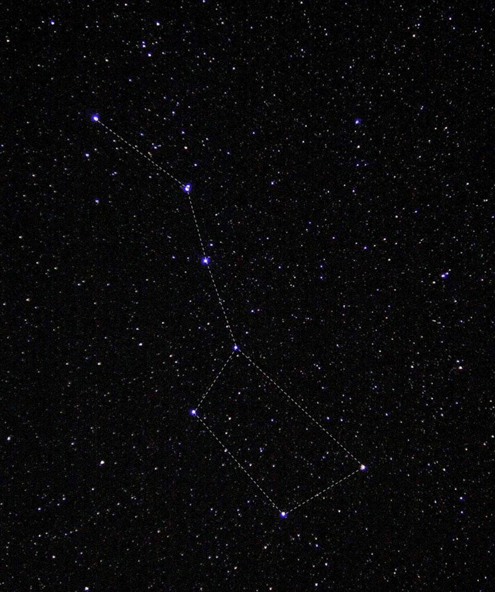
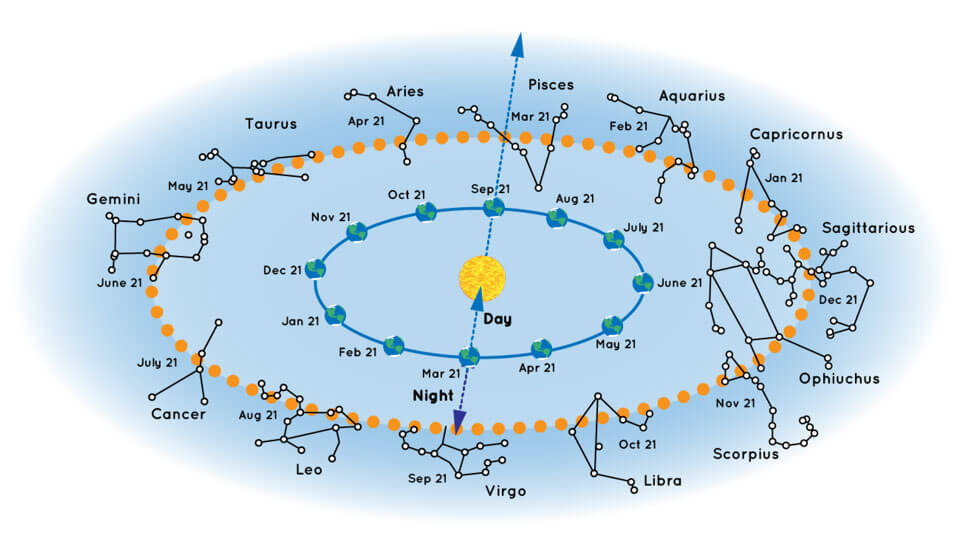

Dark Matter &
Dark Energy
Discover the universe's building blocks – matter, dark matter, and dark energy.
Discover the universe's building blocks – matter, dark matter, and dark energy.
Galaxies consist of stars, planets, and vast clouds of gas and dust, all bound together by gravity. The largest contain trillions of stars and can be more than a million light-years across. The smallest can contain a few thousand stars and span just a few hundred light-years. Most large galaxies have supermassive black holes at their centers, some with billions of times the Sun’s mass.
Galaxies come in a variety of shapes, mostly spirals and ellipticals, as well as those with less orderly appearances, usually dubbed irregular.
Most galaxies are between 10 billion and 13.6 billion years old. Some are almost as old as the universe itself, which formed around 13.8 billion years ago. Astronomers think the youngest known galaxy formed approximately 500 million years ago.
Galaxies can organize into groups of about 100 or fewer members held together by their mutual gravity. Larger structures, called clusters, may contain thousands of galaxies. Groups and clusters can be arranged in superclusters, which are not gravitationally bound. Superclusters, empty voids, “walls” of galaxies, and other large-scale structures make up the cosmic web of matter in the universe.
Our home galaxy is called the Milky Way. It’s a spiral galaxy with a disk of stars spanning more than 100,000 light-years. Earth is located along one of the galaxy’s spiral arms, about halfway from the center. Our solar system takes about 240 million years to orbit the Milky Way just once.

From our perspective on Earth, the Milky Way looks like a faint, milky band of light arcing across the entire sky, which is how it got its name. This feature marks the central disk of our home galaxy seen edge on.
The Milky Way sits in a neighborhood with over 50 other galaxies called the Local Group. Its members range in size from dwarf galaxies (smaller galaxies with up to a few billion stars) to Andromeda, our nearest large galactic neighbor.
The Local Group sits just off the edge of the Virgo cluster and is part of the Laniakea supercluster
There are a few different definitions of constellations, but many people think of constellations as a group of stars. Often, it's a group of stars that looks like a particular shape in the sky and has been given a name. These stars are far away from Earth. They are not connected to each other at all. Some stars in a constellation might be close while others are very far away. But, if you were to draw lines in the sky between the stars like a dot-to-dot puzzle – and use lots of imagination – the picture would look like an object, animal, or person.
Over time, cultures around the world have had different names and numbers of constellations depending on what people thought they saw. Today, there are 88 officially recognized constellations.
This group of stars is called the "big dipper." If you trace a line between the stars, it looks like a ladle, or dipper, that you'd use to dip soup from a pot. This photo of the big dipper was taken by an astronaut on the International Space Station, but you can often see this group of stars from the ground, too! Credit: NASA/Donald R. Pettit
The constellations you can see at night depend on the time of year. Earth orbits around the Sun once each year. Our view into space through the night sky changes as we orbit. So, the night sky looks slightly different each night because Earth is in a different spot in its orbit. The stars appear each night to move slightly west of where they were the night before.
Your location on Earth also determines what stars and constellations you see, and how high they appear to rise in the sky. The Northern Hemisphere is always pointing in a different direction than the Southern Hemisphere. This means that stargazers in Australia, for example, get a slightly different view of the sky and can see a few different constellations than those in the United States.
It can be a little confusing to picture how the night sky changes as we orbit the Sun. You can see how it all works in the illustration below.
A chart showing some of the constellations that are visible from the Northern Hemisphere in different times of year. Credit: NASA/JPL-Caltech
For example, say you’re in the Northern Hemisphere looking into the night sky on September 21. You’ll probably be able to see the constellation Pisces. But you won’t see Virgo because that constellation is on the other side of the Sun. During that time of year, Virgo’s stars would only be visible during the daytime – but you’d never see them because of the brightness of our Sun.
Want more? Our star finder activity is a great way to have some fun and learn about the constellations visible in our night sky each month.

This image of the Orion nebula was captured by the Hubble Space Telescope. It is located in the constellation Orion, below the three stars that form the hunter's belt. Credit: NASA, ESA, M. Robberto
Astronomy is the scientific study of everything in outer space. Astronomers and other scientists study stars and galaxies, most of which are many light-years away from Earth. Studying the scientific properties of these objects in space helps us to understand how the universe was made, what else is out there, and how we fit in.
Astrology is not the same thing as astronomy. As a science, astronomy follows the scientific process involving evidence and data. Astrology is based on the belief that the location of certain stars and planets in the sky can predict the future or describe what a person is like. While astrology is important to some cultural traditions, its claims are not based on scientific evidence.
Constellations are an important part of folklore for many cultures. If you want to learn more about this, check out this resource from the Night Sky Network: Legends in the Sky - Constellation Tales from Around the World

This photo of the constellation Orion was taken by NASA astronaut Karen Nyberg aboard the International Space Station. Credit: NASA/Karen Nyberg
Stars and constellations stay in approximately the same spot for many, many years. They only appear to move in the sky during the year because we are on a moving planet. Because the constellations are in a fixed location, they are often used as landmarks in the sky. Many stars, nebulae, and other objects are named after the constellations they are found in.
For example, meteor showers are named for the constellation where the meteors appear to be coming from. So, for example, the Orionids meteor shower, which occurs in October each year, appear to come from the same direction as the constellation Orion the Hunter.

The constellation Orion is framed by two Perseid meteors on Aug. 12, 2018, in Cedar Breaks National Monument, Utah. The Perseid meteor showers appear to come from the same direction as the constellation Perseus. Credit: NASA/Bill Dunford
Known stars, such as those in well-known constellations, can also be used to navigate. For centuries, sailors used stars to determine their location when out at sea. This is called celestial navigation. NASA astronauts have also trained to use celestial navigation as a backup in case modern navigation systems have trouble.
Robotic spacecraft also use maps of the stars to find their way. They carry a star map in their onboard computers and compare these star maps to patterns of stars in images they take. So, in a way, patterns of stars are as helpful today as they were to ancient navigators.
Constellations are an important part of folklore for many cultures. If you want to learn more about this, check out this resource from the Night Sky Network: Legends in the Sky - Constellation Tales from Around the World